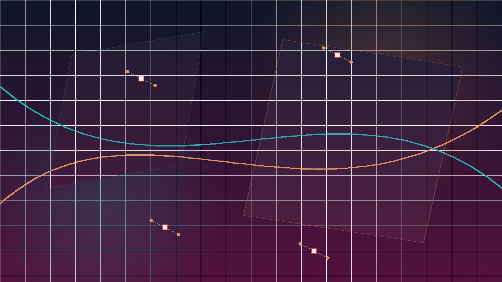
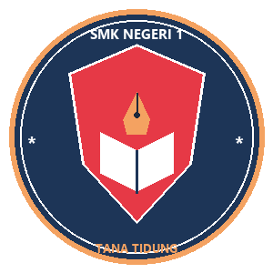
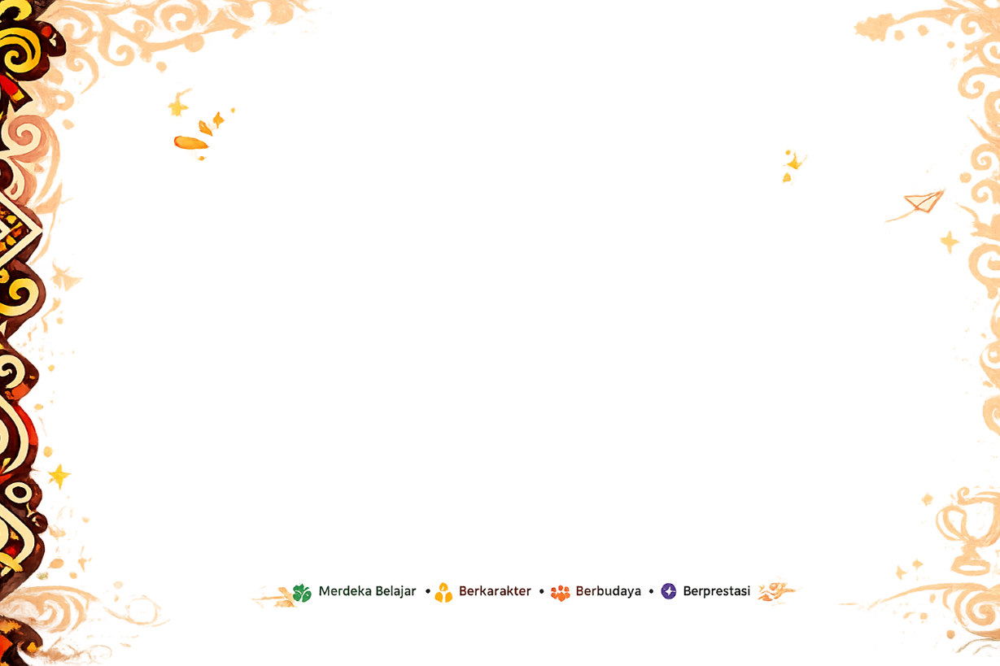
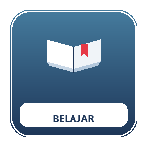
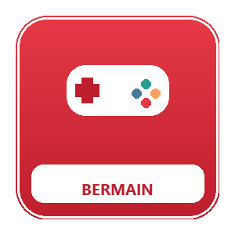
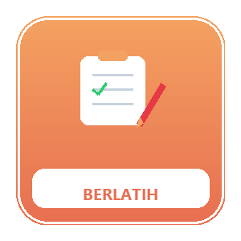
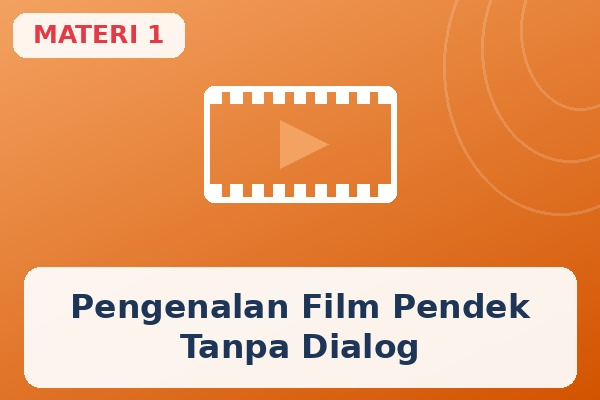
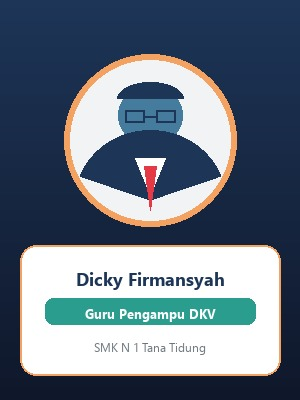

Film Pendek Tanpa Dialog

Mulailah dari Belajar, lanjut ke Bermain, lalu uji dirimu di Berlatih.




Pilih tingkat kesulitan untuk melatih kecepatan reaksi dan ketajaman fokus:
Silakan isi identitasmu sebelum mulai belajar.
